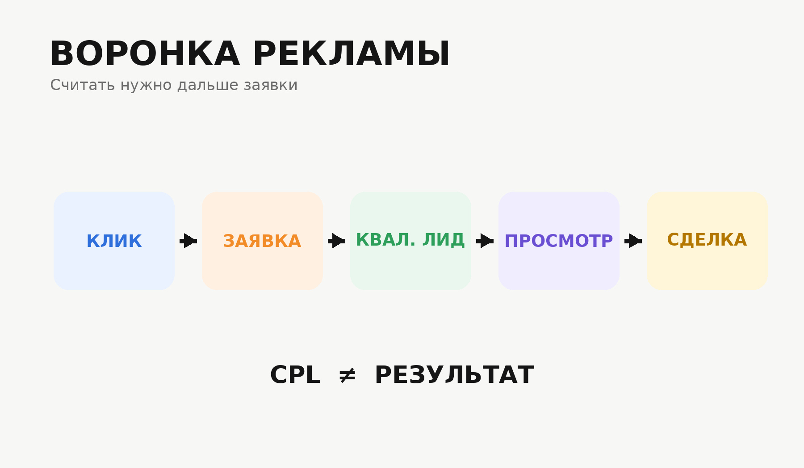

Блог о платном трафике
Контекстная реклама для недвижимости: как получать целевые заявки
Контекстная реклама для недвижимости позволяет обращаться к людям, которые уже ищут квартиру, коммерческое помещение, новостройку, дом или услуги агентства. Но в этой нише недостаточно привести человека на сайт и посчитать заполненные формы. Сделка дорогая, решение принимается долго, а качество обращений может сильно отличаться.
Поэтому я рассматриваю рекламу недвижимости как связку из нескольких элементов: рекламные кампании, посадочная страница, аналитика, квалификация лидов и обратная связь от отдела продаж.
Основным инструментом контекстной рекламы в России остается Яндекс Директ. В Единой перфоманс-кампании можно работать с Поиском, Рекламной сетью Яндекса и Картами, разделяя места показа и аудитории в зависимости от задачи.
Для какой недвижимости подходит контекстная реклама
Принцип работы один, но стратегия сильно зависит от того, что именно продается.
Контекстную рекламу можно использовать для:
- новостроек и отдельных жилых комплексов;
- вторичной недвижимости;
- услуг агентств недвижимости;
- trade-in квартир;
- коммерческих помещений;
- загородных домов и коттеджных поселков;
- аренды жилой и коммерческой недвижимости;
- инвестиционных объектов.
Запрос человека, который ищет конкретный жилой комплекс, сильно отличается от запроса предпринимателя, выбирающего помещение под бизнес. Поэтому объединять все направления в одну рекламную кампанию обычно не стоит.
Для каждого сегмента нужны свои объявления, посадочные страницы и критерии оценки заявки.
Поиск и РСЯ решают разные задачи
Реклама на Поиске
Поиск работает с уже сформированным спросом. Пользователь сам вводит запрос вроде:
- купить квартиру в новостройке;
- коммерческое помещение в ЖК;
- обмен квартиры на новостройку;
- купить квартиру в конкретном районе;
- офис в новом жилом комплексе.
Такой трафик обычно ближе к обращению, но конкуренция в недвижимости может быть высокой. Поэтому нет смысла бороться за каждый возможный запрос. Гораздо полезнее выделить сегменты, которые соответствуют конкретному предложению.
Например, человеку, который ищет коммерческую недвижимость для инвестиций, лучше показывать одно предложение, а предпринимателю, которому помещение нужно под магазин или салон, другое.
Реклама в РСЯ
Рекламная сеть Яндекса позволяет работать с аудиторией шире и возвращать пользователей, которые уже проявляли интерес к объекту или похожим предложениям.
Для недвижимости РСЯ может быть особенно полезна из-за длинного периода выбора. Человек может несколько раз изучать район, сравнивать объекты, смотреть планировки и возвращаться к вопросу покупки позже.
Отдельно о принципах работы сетевой рекламы я рассказывал в статье «Что такое РСЯ в Яндекс Директ и как она работает».
В одном из моих проектов по продвижению trade-in недвижимости именно РСЯ стала основным источником заявок. При рекламном бюджете около 38 000 рублей в месяц обращения в сетях получались примерно по 1500 рублей. Это результат конкретного проекта, а не ориентир стоимости для всей недвижимости.

Как сегментировать рекламу недвижимости
Одна из главных ошибок - рекламировать весь ассортимент одинаково.
Я обычно разделяю спрос по нескольким признакам.
| Сегмент | Пример |
|---|---|
| Тип объекта | квартира, офис, торговое помещение, дом |
| Цель | покупка, аренда, инвестиция, обмен |
| География | город, район, метро, конкретный ЖК |
| Характеристики | площадь, количество комнат, класс жилья |
| Стадия спроса | общий запрос, конкретный объект, бренд |
| Аудитория | собственник, инвестор, предприниматель, покупатель жилья |
Чем точнее сегмент связан с конкретным предложением, тем проще сделать релевантное объявление и посадочную страницу.
При этом дробить кампании до сотен микросегментов тоже не нужно. Алгоритмам требуется достаточно данных для оптимизации, поэтому структура должна оставаться управляемой.
Какая посадочная страница нужна для рекламы недвижимости
Проблема часто находится не в Директе, а на сайте.
Если человек ищет конкретный объект или услугу, а после клика попадает на главную страницу агентства с десятками направлений, ему приходится самостоятельно искать нужную информацию. Часть посетителей на этом этапе просто уходит.
Для рекламного трафика страница должна быстро отвечать на основные вопросы:
- что предлагается;
- где расположен объект;
- кому предложение подходит;
- какие есть варианты и характеристики;
- почему имеет смысл оставить заявку;
- что произойдет после отправки формы.
Для жилой недвижимости обычно нужны фотографии, планировки, расположение, инфраструктура и условия покупки. Для коммерческого помещения на первый план могут выходить площадь, назначение, трафик, расположение внутри ЖК и инвестиционная логика.
В статье «Что такое лендинг в Яндекс Директе и какой сайт выбрать для рекламы» я подробнее разбирал роль отдельной посадочной страницы.
Пример из проекта по trade-in недвижимости
Агентство недвижимости из Екатеринбурга продвигало обмен старой квартиры на новую. У клиента уже был большой многостраничный сайт, рассчитанный прежде всего на SEO.
Для рекламного трафика он работал хуже: предложение терялось среди других страниц и разделов.
Поэтому трафик перевели на отдельный лендинг под trade-in. Упростили путь пользователя, переработали оффер и добавили квиз.
В результате при бюджете около 38 000 рублей в месяц общий CPL держался примерно на уровне 1500-2007 рублей, а стоимость квалифицированных обращений составляла 1915-3010 рублей.
Подробный разбор есть в моем кейсе «Агентство недвижимости, Trade-in».
Этот пример хорошо показывает, почему нельзя оценивать отдельно рекламный кабинет. Иногда улучшение посадочной страницы влияет на результат сильнее, чем очередная корректировка объявления.
Что отслеживать в Яндекс Метрике и CRM
Простая цель «отправил форму» дает слишком мало информации.
Минимально имеет смысл отслеживать:
- отправку формы;
- звонки;
- переходы в мессенджеры;
- прохождение квиза;
- выбор конкретного объекта;
- запись на просмотр или консультацию.
Но основная информация появляется уже после заявки.
Необходимо понимать, что произошло дальше:
- До клиента удалось дозвониться.
- Обращение соответствует объекту.
- Клиент готов обсуждать покупку.
- Назначена встреча или просмотр.
- Сделка состоялась.
Яндекс Метрика позволяет передавать офлайн-конверсии и данные из CRM. Такие события можно связывать с рекламными визитами и использовать для анализа и оптимизации рекламы.
Для недвижимости это особенно полезно. Алгоритму лучше ориентироваться на реальные качественные обращения, чем на любую отправленную форму.

Почему стоимость заявки сама по себе мало о чем говорит
Представим две кампании.
Первая дает заявки по 2000 рублей, но большая часть людей не подходит клиенту.
Вторая дает обращения по 3500 рублей, зато отдел продаж признает большинство из них целевыми.
Если смотреть только на CPL, первая кампания выглядит лучше. Для бизнеса результат может оказаться обратным.
Поэтому я обычно смотрю как минимум на две стоимости:
CPL - стоимость любого обращения.
Стоимость квалифицированного лида - сколько стоит заявка, которая действительно соответствует требованиям бизнеса.
Дальше можно считать стоимость просмотра, встречи, брони или сделки, если этих данных достаточно.
Подробнее о расчете рекламных расходов есть в статье «Стоимость контекстной рекламы: цена, бюджет и расчет расходов».
Кейс коммерческой недвижимости в ЖК «Ватутинки Парк»
Еще один пример - продвижение коммерческих помещений в ЖК «Ватутинки Парк» в Новой Москве.
На старте реклама приносила около 7 лидов по цене примерно 6000 рублей за обращение.
Мы переработали квиз, тексты, структуру рекламных кампаний и офферы. Акцент сделали на аудитории, которая рассматривала помещение как покупку для бизнеса или инвестицию.
Стоимость лида удалось снизить примерно до 1700 рублей. В одном из периодов 10 из 12 обращений клиент подтвердил как квалифицированные.
Подробные данные собраны в кейсе «Коммерческая недвижимость, ЖК Ватутинки Парк».
У этого проекта было дополнительное ограничение - клиенту требовалось не более 15 заявок в месяц. При достижении лимита рекламу приходилось останавливать. Для автоматических стратегий такие регулярные паузы нежелательны, поскольку кампания теряет стабильность и получает меньше данных для дальнейшей оптимизации.
Ретаргетинг для недвижимости
Недвижимость редко покупают после одного посещения сайта.
Пользователь может открыть несколько проектов, сравнить стоимость, район, ипотеку, планировки, вернуться через неделю и снова начать поиск.
Поэтому часть рекламы имеет смысл направлять на уже знакомую с предложением аудиторию.
Например:
- посетил страницу объекта, но не оставил заявку;
- посмотрел несколько планировок;
- начал проходить квиз;
- вернулся на сайт повторно;
- изучал определенный тип помещений.
Для этого можно использовать цели и сегменты Яндекс Метрики.
При этом ретаргетинг не должен превращаться в бесконечное преследование одним и тем же баннером. Лучше менять предложение в зависимости от поведения пользователя и этапа выбора.
Сколько стоит контекстная реклама недвижимости
Универсальной стоимости лида в этой нише нет.
На результат влияют:
- регион;
- тип недвижимости;
- стоимость объекта;
- уровень конкуренции;
- объем спроса;
- качество сайта;
- сила предложения;
- работа отдела продаж;
- критерии квалифицированного лида.
Поэтому фраза «сколько стоит заявка на недвижимость» без этих вводных практически бесполезна.
Перед запуском лучше определить допустимую стоимость квалифицированного обращения исходя из экономики сделки, а затем уже смотреть, способен ли рекламный канал работать в этих рамках.
Результаты моих кейсов тоже нельзя переносить на новый проект как обещание стоимости. Trade-in по 1500-2007 рублей и коммерческая недвижимость примерно по 1700 рублей показывают, что происходило в конкретных проектах с конкретным предложением, сайтом, регионом и рекламным периодом.
Основные ошибки при рекламе недвижимости
Вести весь трафик на одну страницу
Человек ищет студию, коммерческое помещение и обмен квартиры с разными задачами. Одинаковая посадочная страница редко одинаково хорошо отвечает всем.
Смешивать разные виды спроса
Брендовые запросы, общий спрос, конкретные районы и ретаргетинг полезно анализировать отдельно. Иначе становится сложнее понять, что именно приносит результат.
Оценивать рекламу только по кликам и CTR
CTR и цена клика нужны для диагностики кампании, но бизнес зарабатывает не на кликах.
Главная цепочка выглядит так:
расходы -> обращения -> квалифицированные лиды -> просмотры или встречи -> сделки.
Оптимизироваться на любую заявку
Если в рекламу передается только отправка формы, алгоритм не знает, какие обращения в итоге оказались полезными.
Связка Метрики с CRM и передачей офлайн-конверсий помогает приблизить оптимизацию к реальному результату бизнеса.
Постоянно останавливать работающие кампании
Автоматическим стратегиям нужны данные. Частые остановки, резкая смена настроек и постоянное пересоздание кампаний затрудняют стабильную оптимизацию.
Запускать рекламу до подготовки сайта
Хорошая реклама не исправит непонятное предложение, устаревшую информацию об объекте или форму, которую неудобно заполнять.
Как я строю работу с рекламой недвижимости
До запуска я сначала разбираю сам продукт и воронку.
Смотрю:
- Какие объекты или услуги нужно продвигать.
- Кто является целевым покупателем.
- Как люди формулируют спрос.
- На какие страницы вести разные сегменты.
- Какие действия фиксировать в Метрике.
- Как клиент определяет качественный лид.
- Какие данные можно вернуть из CRM.
После запуска начинается накопление статистики и оптимизация. Проверяются поисковые запросы, аудитории, площадки РСЯ, объявления, конверсия посадочных страниц и качество обращений.
На главной странице сайта подробнее описано, что входит в мою работу с рекламными проектами.
Что в итоге определяет результат
Контекстная реклама для недвижимости работает лучше всего, когда рекламный кабинет не существует отдельно от остального бизнеса.
Нужны четыре связанные части:
- правильная сегментация спроса;
- подходящая посадочная страница;
- настроенная аналитика;
- данные о реальном качестве обращений.
Если смотреть только на цену клика или количество форм, можно оптимизировать рекламу в неправильную сторону. В недвижимости гораздо полезнее считать путь до квалифицированного лида, просмотра и сделки.
FAQ
Что лучше для недвижимости - Поиск или РСЯ?
Заранее выбрать один канал нельзя. Поиск работает с уже сформированным спросом, РСЯ позволяет получать дополнительный объем и возвращать аудиторию. Обычно их оценивают отдельно по стоимости и качеству обращений.
Нужен ли отдельный лендинг для рекламы недвижимости?
Если на основном сайте много объектов и направлений, отдельная страница под конкретное предложение часто упрощает путь пользователя. В моем кейсе с trade-in именно отдельный лендинг и квиз стали важной частью рекламной связки.
Можно ли рекламировать агентство недвижимости целиком?
Можно, но разные услуги лучше разделять. Продажа вторичного жилья, новостройки, аренда, коммерческая недвижимость и trade-in имеют разный спрос и требуют разных предложений.
Как понять, что реклама недвижимости работает хорошо?
Смотреть нужно на качество обращений и их дальнейшее движение по воронке. CPL полезен, но более показательной метрикой становится стоимость квалифицированного лида, а при достаточном объеме данных - стоимость просмотра, встречи или сделки.
Нужно ли подключать CRM к Яндекс Директу?
Для небольшого проекта можно начать с Метрики и ручной оценки заявок. При большом количестве обращений связка с CRM и передача офлайн-конверсий значительно упрощают анализ качества трафика и позволяют использовать эти данные при оптимизации рекламы.